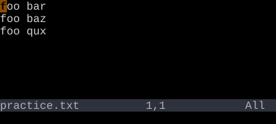
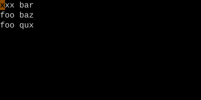
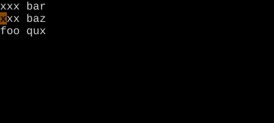
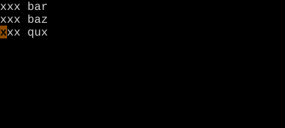

Repeat Last Change
. — replay the last change. The single most useful key.
The . command repeats the last change — exactly what you did, including any inserted text. It is what makes Vim feel like Vim.
If Vim has a single most-loved key, this is it. . replays the last change. Not the last keystroke, not the last motion — the last change. That distinction is the whole reason . feels magical.
| Key | Note |
|---|---|
| . |
Reference
| Key | Action |
|---|---|
| . | Repeat last change at cursor |
| {n}. | Repeat last change with new count {n} |
| ".p | Paste the actual recorded change as text |
Worked example — .
The single most powerful key in Vim.

xxx, Esc.

Dot replays the last change (anything that modified the buffer). Cheap revolution: structure your motions so dot becomes useful.

Move-and-dot is a Vim idiom. Beats keyboard macros for trivial repetitions.
See also: Dot with Counts, Dot Patterns, Change-Next-Match Loop — {key:cgn}, Undo and Redo